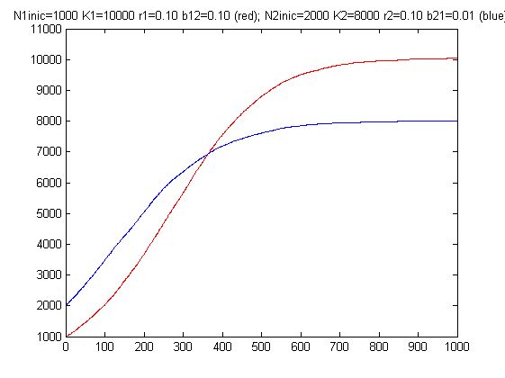

clear;
r1=0.1;
r1month=r1/12;
N1_0=1000;
N1log=N1_0;
K1=10000;
b12=0.1;
b12month=b12/12;
r2=0.1;
r2month=r2/12;
N2_0=2000;
N2log=N2_0;
K2=8000;
b21=0.01;
b21month=b21/12;
meses=1000;
for k=1:meses
r1eq = r1month+r1month*b12month*N2log/K1-r1month*N1log/K1;
incN1=binornd(N1log,1-exp(-1*r1eq));
N1log=N1log+incN1;
r2eq = r2month+r2month*b21month*N1log/K2-r2month*N2log/K2;
incN2=binornd(N2log,1-exp(-1*r2eq));
N2log=N2log+incN2;
plot(k,N1log,'-r','LineWidth',4);
hold on;
plot(k,N2log,'-b','LineWidth',4);
end
title(sprintf('N1inic=%d K1=%d r1=%0.2f b12=%0.2f (red); N2inic=%d K2=%d r2=%0.2f b21=%0.2f (blue)',N1_0,K1,r1,b12,N2_0,K2,r2,b21));
